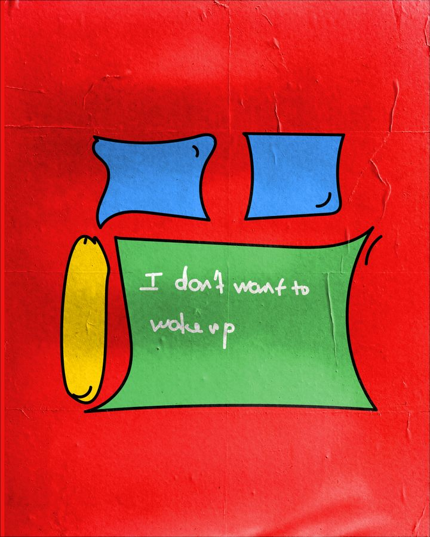
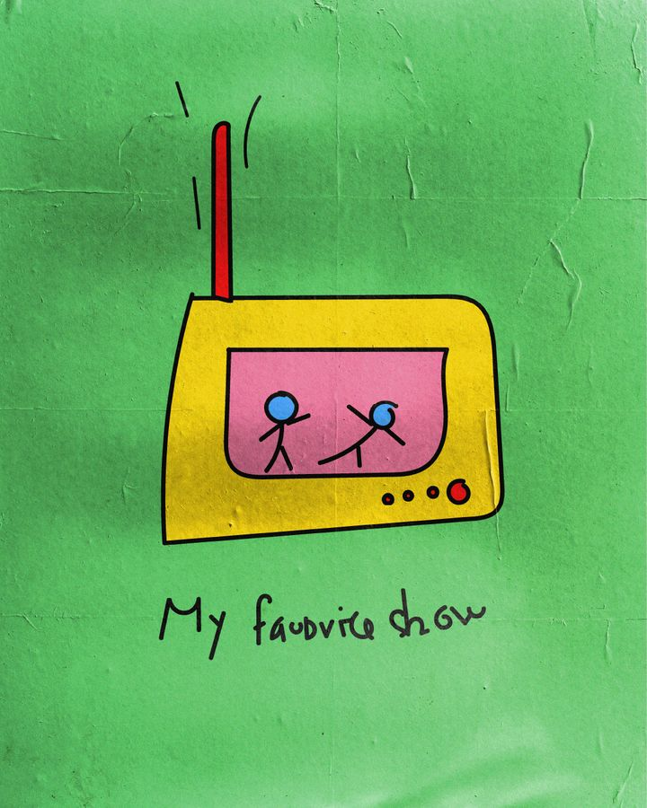
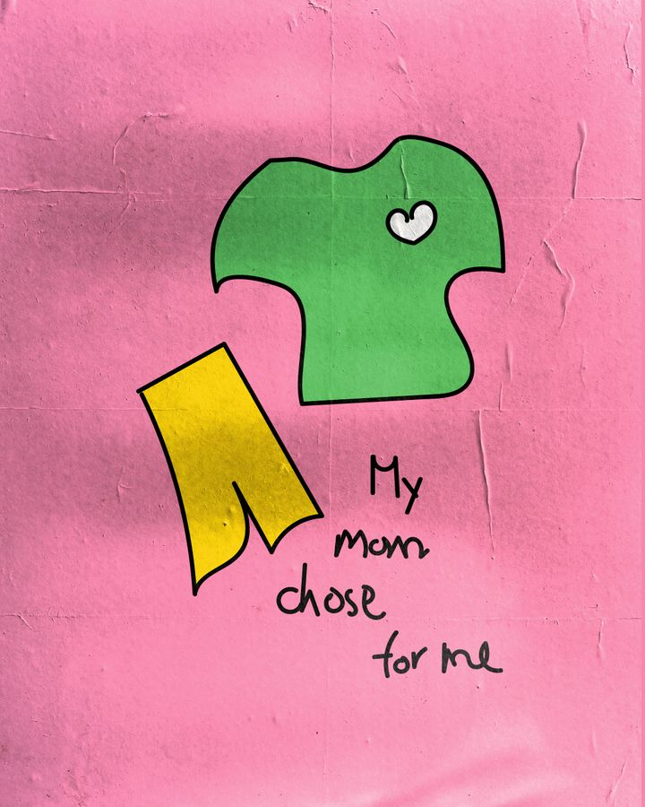
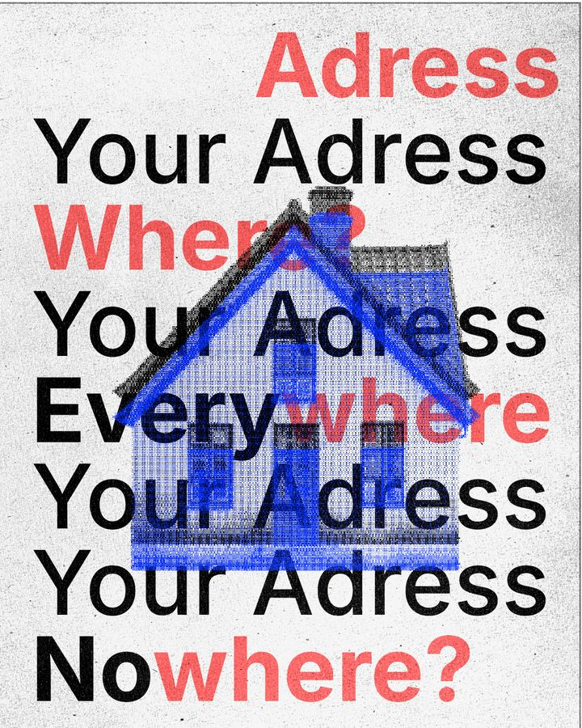
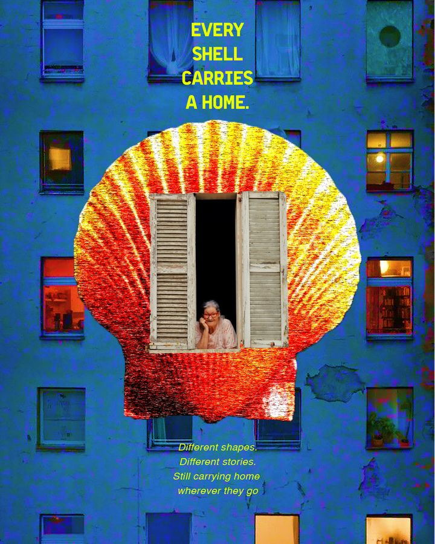

house
/haʊs/ · n.
1. A triangle on top, a door, one watchful window, and smoke that curls like a doodle. 2. What home looks like before you learn perspective.
Day 9

family
/ˈfæm.ə.li/ · n.
Mama, papa, me — drawn by how tall each one feels. The smallest figure is the only one standing in green.
Day 9

bed
/bed/ · n.
The most honest room of the house: the place where you can say, out loud or not, that you don’t want to wake up.
Day 9

show
/ʃoʊ/ · n.
A glowing box with a wobbly antenna and two tiny dancers inside. Home is whatever plays your favorite thing.
Day 9

chosen
/ˈtʃoʊ.zən/ · adj.
What someone else picked for you each morning: a green top with a small heart, yellow shorts. Care, in the shape of clothes.
Day 9

address
/ˈæd.res/ · n.
Where? Where? The line you write on forms until it stops sounding like a place at all.
Day 10

nowhere
/ˈnoʊ.wer/ · adv. · also: everywhere
Two answers to the same question. Home can be nowhere you can point to, and everywhere you stop long enough to be yourself.
Day 10

body
/ˈbɑː.di/ · n.
The first house you get, and the one you can’t move out of. Walls of arms, windows that are eyes, floors that are feet.
Day 11

shell
/ʃel/ · n.
A home that grows out of the one living in it. No two are alike, and none is ever left behind.
Day 12

window
/ˈwɪn.doʊ/ · n.
The small frame where a life leans out: a grandmother, a couple, a cat, two dogs, a child on a mother’s arm.
Day 12